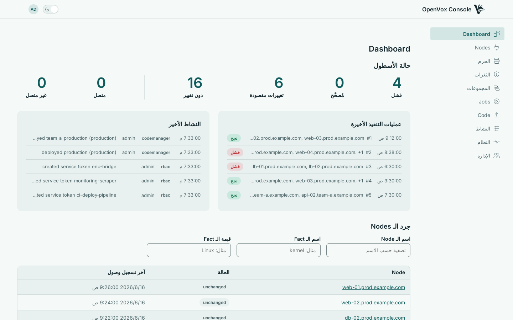
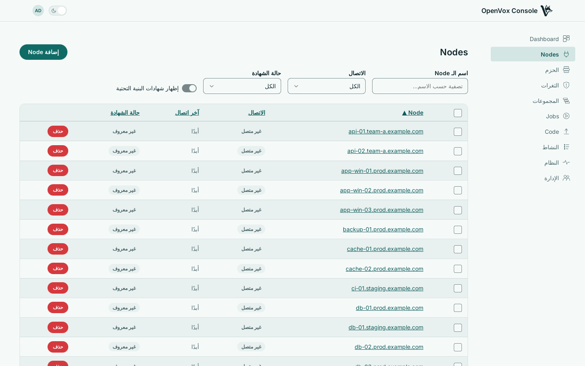
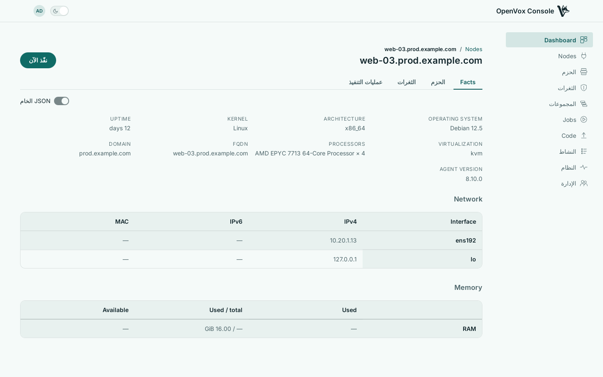

تقرأ وحدة التحكم openvoxdb مباشرة، فما تراه هو ما أبلغ عنه وكلاؤك — لا شيء يُزامَن، ولا شيء يتغيّر في جانب الـ Node.
ابدأ بما يحتاج إلى انتباه
تُجمَّع عمليات التنفيذ بالطريقة التي تفرزها بها: ما فشل، وما تغيّر عن قصد، وما صحّح انحرافًا، وما كان أصلًا كما طلبت. وتُتتبَّع إمكانية الوصول على حدة، لأن Node صمت وNode أبلغ عن فشل مشكلتان مختلفتان بعلاجين مختلفين.

ابحث في الأسطول بأي Fact
صفِّ حسب الاسم، أو حسب أي شيء تبلّغ عنه وكلاؤك — نظام التشغيل، النواة، المعمارية، أو Fact خاص بك. تأتي الإجابات من openvoxdb بحالته في هذه اللحظة، لا من ذاكرة مؤقتة.
حالة الشهادة معروضة إلى جانب ذلك، ومع تهيئة الوصول إلى الـ CA يمكنك التوقيع والإبطال من الصفحة نفسها بدل البحث عن طرفية على الخادم.

Node واحد بالكامل
تجمع صفحة الـ Node كل ما يخصه: الـ Facts، وعمليات التنفيذ الأخيرة، والفئات التي منحها إياه التصنيف، وما هو مثبَّت عليه، والثغرات التي تمسّه — كل ما تحتاجه حين يكون السؤال عن جهاز واحد لا عن الأسطول كله.

كل حدث مورد أنتجه التشغيل موجود هنا، مع القيمة القديمة والجديدة لكل تغيير، والـ manifest والسطر الذي تسبب فيه. إنه ما أرسله الوكيل، لا ملخصًا له.
Do it
Enrol a node with one script on Linux, macOS or Windows, sign its certificate, and see it connect and run.
Sign, revoke and clean node certificates from the console, and what each does to a connected node.
Delete a node from the console, what that does in openvoxdb and the CA, and what it keeps.
OpenVox Console ships as container images, built for amd64 and arm64 on every push, and as a single binary. The install guides take you from an empty host to a working deployment - openvoxserver, openvoxdb, Postgres and the console - with containers or with packages.